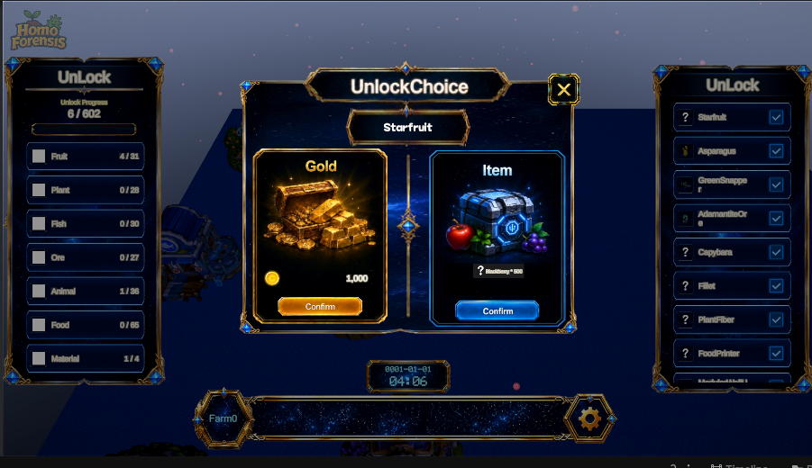

Sub System
세계여행(언락)
진입 경로
홈
→ 코어 시스템
→ 세계여행세계여행 메뉴에서는 새로운 항목을 발견하고, 골드 또는 지정 재료를 지불해 해금한다.

처음 해금 시점
세계여행은 튜토리얼 진행 중 `세계여행 가기` 단계가 열리면 해금된다.
튜토리얼 시작
→ 기본 시스템 학습
→ 세계여행 가기 단계 오픈
→ 세계여행 메뉴 해금항목 해금 방식
세계여행에서 새로운 항목을 발견하면 해금 선택창이 열린다.
새 항목 발견
→ 골드 또는 지정 재료 중 하나 선택
→ 선택한 비용 지불
→ 해당 항목 해금골드로 해금
- 화면에 표시된 골드를 지불한다.
- 결제하면 해당 항목이 해금된다.
재료로 해금
- 화면에 표시된 지정 재료와 수량을 지불한다.
- 재료를 지불하면 해당 항목이 해금된다.
골드와 재료를 모두 지불하는 것이 아니라 둘 중 하나만 선택한다.
해금 진행도
세계여행에서 발견하고 해금한 항목은 전체 해금 진행도에 반영된다.
항목 분류
- 과일
- 식물
- 물고기
- 광물
- 동물
- 음식
- 재료
각 분류에는 현재 해금한 수량과 전체 항목 수가 표시된다.
현재 해금 수량 / 전체 항목 수누적 해금 보상
세계여행에서 특정 해금 수를 달성하면 새로운 제품, 콘텐츠, 시스템 요소가 추가로 해금된다.
세계여행 항목 해금
→ 누적 해금 조건 달성
→ 새로운 요소 해금해금 가능한 요소
- 제품
- 프러덕트
- 미생물
- 블루프린트
- 음악
- 뉴스
- 광고
각 요소는 정해진 누적 해금 조건을 달성하면 사용할 수 있다.
전체 진행 흐름
튜토리얼에서 세계여행 해금
→ 세계여행 메뉴 진입
→ 새로운 항목 발견
→ 골드 또는 지정 재료 지불
→ 항목 해금
→ 누적 해금 수 증가
→ 제품·프러덕트·미생물·블루프린트·음악·뉴스·광고 해금메뉴 설명
세계여행
세계여행에서 새로운 자원과 항목을 발견합니다. 골드 또는 지정 재료 중 하나를 지불해 항목을 해금하고, 누적 해금 조건을 달성해 제품, 미생물, 블루프린트, 음악, 뉴스, 광고 등의 요소를 개방할 수 있습니다.
아직 정하지 않은 내용
다음 내용은 현재까지 구체적인 값이 정해지지 않았다.
- 여행 지역의 종류
- 지역별 이동 시간
- 여행 비용
- 각 항목의 골드 해금 비용
- 각 항목에 필요한 지정 재료와 수량
- 제품과 프러덕트의 정확한 구분
- 각 시스템이 열리는 정확한 누적 해금 수
- 뉴스와 광고가 해금된 뒤 적용되는 세부 기능